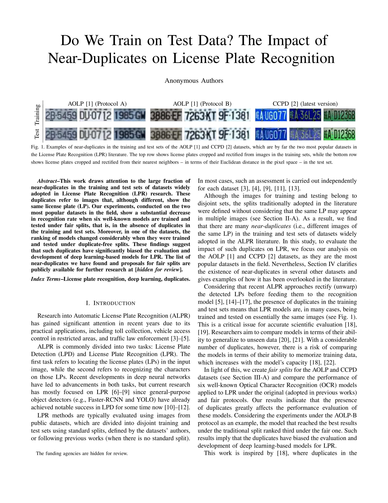

The Impact of Near-Duplicates on License Plate Recognition
|
|
|
|
|
|
＊ Federal University of Paraná, Curitiba, Brazil
† Pontifical Catholic University of Paraná, Curitiba, Brazil
‡ Federal University of Technology-Paraná, Curitiba, Brazil
Submitted to ICASSP 2023
|
|
Examples of near-duplicates in the training and test subsets of the AOLP and CCPD datasets, which are by far the two most popular datasets in the License Plate Recognition (LPR) literature. The top row shows license plates cropped and rectified from images in the training sets, while the bottom row shows license plates cropped and rectified from their nearest neighbors in the test set. |
{kind=link}
Abstract
The AOLP and CCPD datasets are the two most popular datasets for License Plate Recognition (LPR), being frequently used in evaluating and developing new methods for this task. However, we find that a large number of the test instances of these datasets have near-duplicates in the training set. These duplicates refer to images that, although different, show the same license plate (LP). We show that a significant drop in recognition rate occurs when six well-known models are trained and tested under fair splits, i.e., in the absence of near-duplicates in the training and test sets. From these results, we can infer that such duplicates have considerably biased the evaluation and development of deep learning-based models for LPR. The list of near-duplicates we have found and proposals for fair splits are publicly available for further research.
Paper
|  | Rayson Laroca, Valter Estevam, Alceu S. Britto Jr., Rodrigo Minetto, David Menotti Do We Train on Test Data? The Impact of Near-Duplicates on License Plate Recognition Submitted to ICASSP 2023 |
In summary, this paper has two main contributions:
|
|
|
|
|
Related Work
This work is inspired by [1], where duplicates in the CIFAR-10 and CIFAR-100 datasets were identified, and motivated by recent studies that indicated the existence of bias in the ALPR context. For example, in [2], the authors observed significant drops in LPR performance when training and testing state-of-the-art OCR models in a leave-one-dataset-out experimental setup. As another example, the Name That Dataset! experiments carried out in [3] suggested that each LPR dataset has a unique and identifiable ''signature,'' as a lightweight classification model could predict the source dataset of a license plate image at levels significantly better than chance.
[1] - B. Barz and J. Denzler, “Do we train on test data? Purging CIFAR of near-duplicates,” Journal of Imaging, vol. 6, no. 6, p. 41, 2020. [arXiv]
[2] - R. Laroca, E. V. Cardoso, D. R. Lucio, V. Estevam, and D. Menotti, “On the cross-dataset generalization in license plate recognition,” in International Conference on Computer Vision Theory and Applications (VISAPP), pp. 166-178, Feb 2022. [arXiv]
[3] - R. Laroca, M. Santos, V. Estevam, E. Luz, and D. Menotti, “A first look at dataset bias in license plate recognition,” in Conference on Graphics, Patterns and Images (SIBGRAPI), pp. 234-239, Oct 2022. [arXiv]
Acknowledgments |